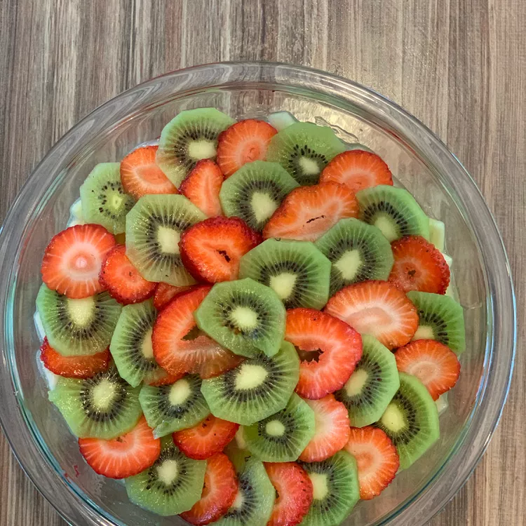

Fruit Salad
Home

Description
This is a wonderful and easy fruit salad that is also pretty for special occasions or holidays.
Ingredients
- 1 can pineapple chunks
- 2 apples, peeled and cored
- 1 can peach pie filling
- 2 bananas, peeled and diced
- 3 kiwis
- 1 pint strawberries
Steps
- In a small bowl, toss the chopped apples in reserved pineapple juice. Allow to sit for 5 to 10 minutes.
- In a large salad bowl, combine the peach pie filling and pineapple chunks.
- Remove apples from pineapple juice and add to pie filling and pineapple mixture. Add chopped bananas to reserved pineapple juice and let sit for 5 to 10 minutes.
- Peel and slice kiwi and 1/2 of strawberries. Chop the other 1/2 of strawberries and set aside.
- Remove bananas from pineapple juice and add to pie filling mixture. Add chopped strawberries; toss together.
- Arrange kiwi slices around the edge of the serving bowl and alternate with strawberry slices. Chill and serve.